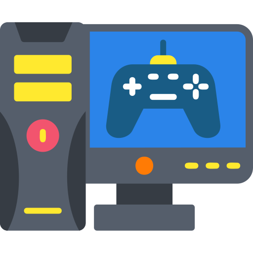

Things I love Doing
Outside of my software development work and tutoring, I enjoy creative projects that challenge my mind and keep me learning. Here are four of my favorite hobbies.
Outside of my software development work and tutoring, I enjoy creative projects that challenge my mind and keep me learning. Here are four of my favorite hobbies.

Capturing stories, playing with framing, and creating visual content.

Experimenting with HTML/CSS layouts, animations, and new design concepts.
Exploring new technology trends, reading guides, and expanding my knowledge base.

Relaxing with video games and trying out new digital tools or software.
My hobbies keep my mind fresh, balanced, and creative. Coding personal projects sharpens my problem-solving skills, photography and videography bring out my visual side, and teaching helps me grow alongside my students. They help me stay curious and do better in everything I build.
Swimming
Cooking
Playing drums
Horse riding
Driving
Travelling